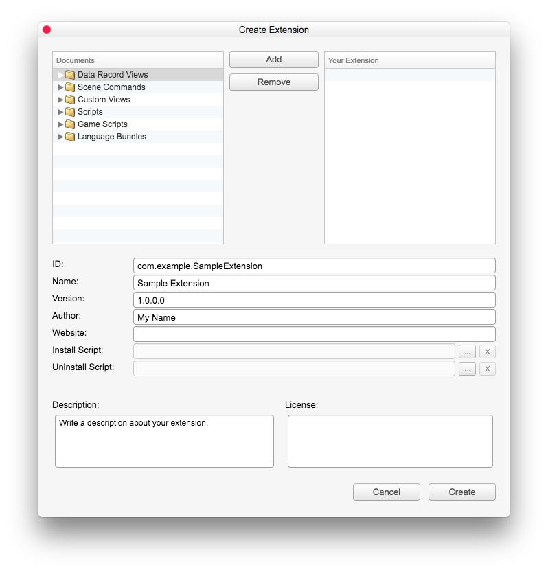
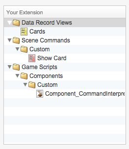

示例：创建扩展
N现在，我们可以最终使用 Extension Composer 创建我们的卡片扩展，并与其他人分享。要创建扩展，只需通过菜单下的工具 > 开发者工具 > 创建扩展打开 Extension Composer。

文档
显示所有可以通过扩展修改的文档。它们是 Extension Editor 中的所有文档，以及所有游戏脚本、场景、数据库记录和资源。您可以选择在此处创建或修改的文档，然后单击“添加”按钮将它们添加到您的扩展中。
您的扩展
显示您的扩展内容。通过在“文档”视图中选择文档并单击“添加”按钮，可以轻松地将文档添加到您的扩展中。要从扩展中删除文档，只需选择文档或文件夹，然后单击“删除”按钮。
扩展的唯一标识符。使用一些唯一的名称，例如您的公司或网站域名，如：com.example.ExampleExtension。在我们的例子中，我们将使用“com.degica.ExampleCardExtension”。
您的公司或组织的名称。
扩展的名称。我们将称之为“卡片扩展”。
版本
扩展的版本。我们将在此处使用版本“1.0.0.0”。
扩展的作者/开发者。我们将在此处使用“DEGICA”。
网站
作者/开发者的网站。在此处放置您的网站链接，用户可以在其中找到有关您扩展的更多信息。在我们的例子中，我们将放入“www.degica.com”。
安装脚本
您可以使用可选的安装脚本来扩展您的扩展。如果需要迁移旧版本扩展创建的数据记录或场景命令，安装脚本会很有用。有关更多信息，请参阅 extension-system 参考。在我们的例子中，我们将将其留空。
卸载脚本
您可以为扩展使用可选的卸载脚本，以便在必要时进行清理。有关更多信息，请参阅 extension-system 参考。在我们的例子中，我们将将其留空。
包含关于扩展作用、它为编辑器和/或游戏引擎添加了哪些功能等的详细描述。在我们的例子中，我们将添加“一个允许用户在数据库中创建简单卡片的扩展，适用于小型卡片小游戏。它还提供了一个简单的场景命令‘显示卡片’，用于在屏幕上显示卡片”。
许可证
您可以在此处放置您的许可证文本/条款和条件。用户需要接受它们才能安装扩展。在我们的例子中，我们将将其留空。
好的，让我们将我们创建的文档添加到我们的扩展中。我们创建了 3 个文档：数据记录视图“卡片”，新场景命令“显示卡片”以及用于扩展解释器的游戏脚本“Component_CommandInterpreterCardExtension”。只需选择它们并单击“添加”按钮将它们添加到我们的扩展中。现在我们的扩展内容应该看起来像这样：

现在我们可以单击“创建”按钮，选择扩展应该创建的位置，然后就完成了！
Extension Composer 会在选定的位置创建一个以扩展命名的 .zip 存档。我们可以与其他用户共享此 zip 存档，让他们能够轻松地通过 Extension Manager 安装我们的扩展！